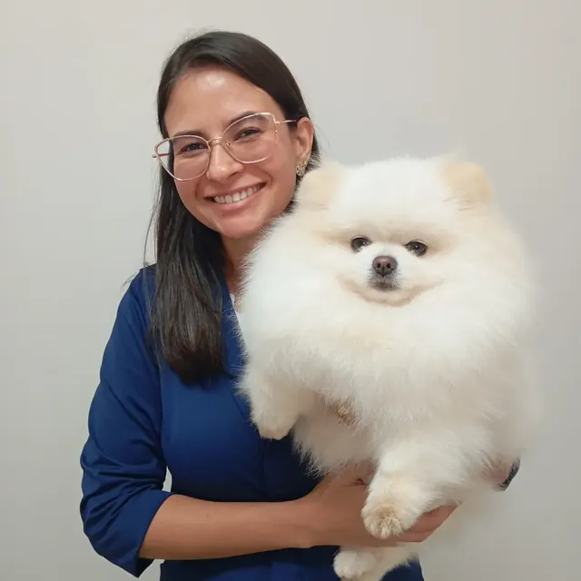
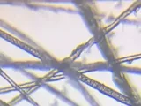
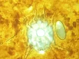
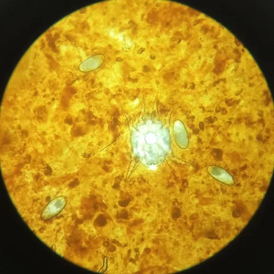
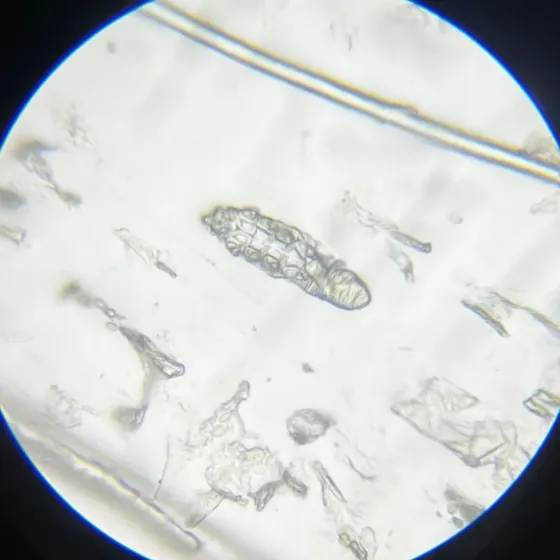
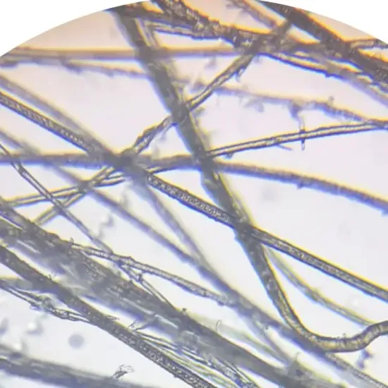
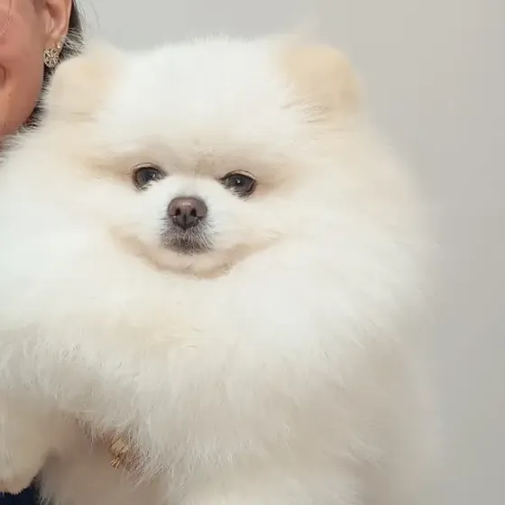
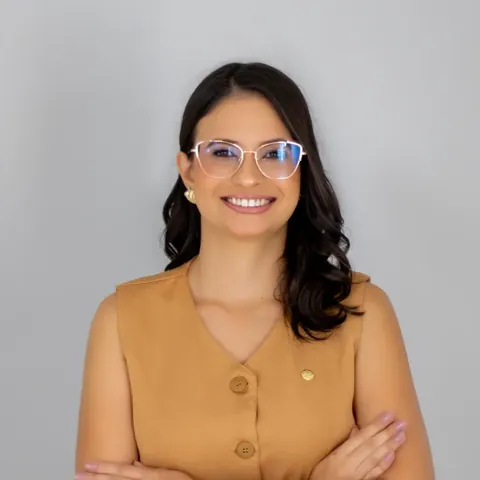
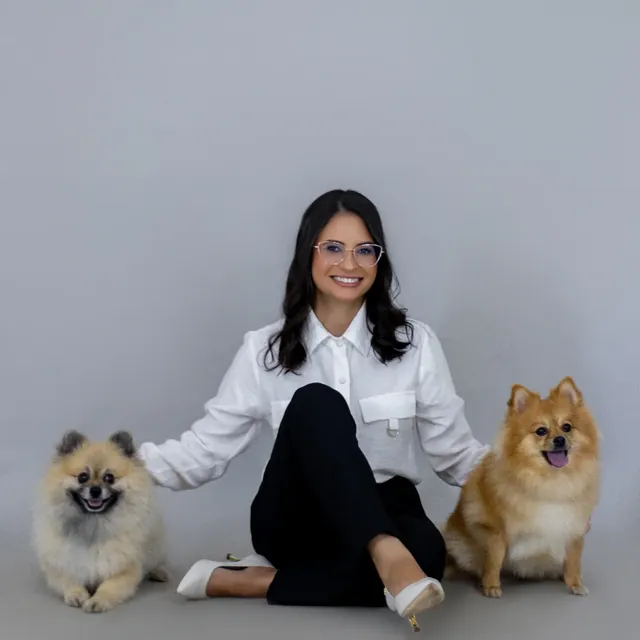
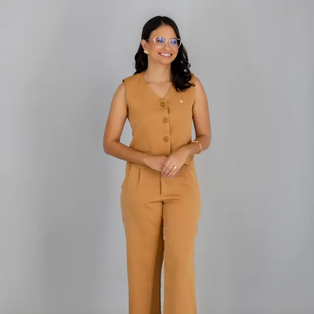

Dermatologia veterinária
A Dra. Fernanda Rainho atende cães e gatos em Jales/SP, em consultas de cerca de uma hora com exames feitos durante o atendimento.
Médica-veterinária, CRMV-SP 53.453, pós-graduada em Dermatologia Veterinária. Atendimento com hora marcada.

Na consulta, a Dra. Fernanda ouve você, examina pele, pelos  
Exames ao microscópio
Citologia de orelhaFeita durante a consulta: uma amostra do ouvido vai à lâmina e ao microscópio. Mostra fungos, bactérias e ácaros como o Otodectes cynotis, que causa a sarna de orelha (na imagem).
Ver alergias e otitesRaspado de peleTambém feito na consulta: a raspagem leve da pele procura ácaros ao microscópio, como o Demodex da demodicose (na imagem) e os agentes de outras sarnas.
Ver todos os examesTricogramaAlguns pelos são retirados e observados ao microscópio para avaliar a raiz e a haste. Ajuda a investigar queda de pelo, falhas na pelagem e lambedura excessiva.
Ver alopecia X


O que a Dra. Fernanda trata
Ela atende os principais problemas de pele, pelo e ouvido de cães e gatos. Três deles têm página própria.
Alopecia X
Queda de pelo e falhas na pelagem, comuns no spitz alemão (lulu-da-pomerânia). A consulta investiga a causa e discute opções como microagulhamento e peeling de diamante.
Feridas que não cicatrizam
Investigação do que impede a cicatrização e, quando indicadas, sessões de fotobiomodulação e terapia fotodinâmica como apoio ao tratamento.
Alergias e otites
Coceira, lambedura, dermatite atópica, alergia alimentar e otites de repetição, com acompanhamento ao longo do tempo.
Como é a consulta
-

Antes: três dias sem banho
O banho recente remove da pele o que precisa ser examinado. Separe também os exames anteriores e os remédios que o pet já usou.
-

Durante: cerca de uma hora
Conversa sobre a rotina do pet, exame clínico, otoscopia, lâmpada de Wood e citologias feitas ali mesmo.
-

Depois: plano e acompanhamento
Você sai com o plano explicado etapa por etapa e com os retornos combinados para acompanhar a evolução.
Quando dar o último banho?
Informe a data da consulta e veja até que dia o pet pode tomar banho.
Conte quatro dias para trás a partir da data da consulta. Para uma consulta na sexta-feira, o último banho é na segunda-feira; assim o pet passa terça, quarta e quinta sem banho.
Avaliações no Google
Beatriz Fernanda Silva
“Profissional maravilhosa, atenciosa e cuidadosa. Muito paciente para tirar as dúvidas e explicar com clareza!”
Por trás de cada pele, uma história

Formação
Médica-veterinária (CRMV-SP 53.453), pós-graduada em Dermatologia Veterinária pela Ufape (2025), com cursos de microagulhamento e peeling de diamante para alopecia X e de fotobiomodulação e terapia fotodinâmica.
Como ela atende
Ouvir o tutor, entender a rotina do animal, investigar com cuidado e explicar cada etapa. Exames quando necessários, decisões baseadas em evidências e acompanhamento da evolução de cada paciente.
Agende pelo WhatsApp
Preencha os campos e a conversa abre com a mensagem pronta.
Os dados vão direto para a conversa no WhatsApp. O site não guarda nenhuma informação.
WhatsApp (17) 99616-2379 · Segunda a sexta, das 8h às 17h30. Sábado, das 8h às 12h.